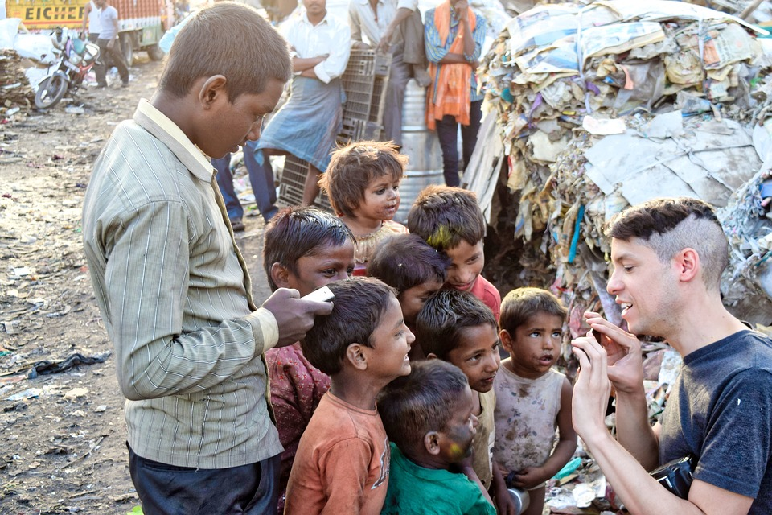
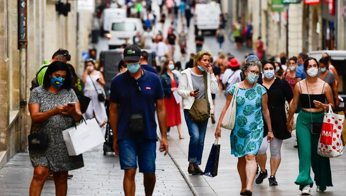

CAMBIA EL MUNDO !

Los ODS, más relevantes que nunca
Marco de recuperacion global
Nuestro mundo de hoy se enfrenta a una crisis de proporciones monumentales. El nuevo y cruel coronavirus está causando estragos en todo el mundo, destruyendo vidas y arruinando los medios de subsistencia...

Llamado a la comunidad IT
Es el momento de aportar soluciones
A medida que nuestro mundo se esfuerza por hacer frente a los desafíos planteados por la pandemia, en última instancia debemos tratar de convertir la crisis en una oportunidad y acelerar las acciones necesarias para lograr los ODS. El espíritu de solidaridad, la acción rápida...

Educacion de calidad
Buscar soluciones equitativas y acceso universal
Para proteger el bienestar de los niños y garantizar que tengan acceso a un aprendizaje continuo, la UNESCO lanzó en marzo de 2020 la Coalición Mundial por la Educación COVID-19 , una asociación multisectorial entre la familia de las Naciones Unidas...

Detras del exito de contención de la pandemia en Europa
La crisis del coronavirus ha dibujado una especie de frontera sanitaria entre los países de la Europa Occidental y los del centro y este de Europa.
Tanto Italia como Francia, España y Reino Unido han superado cada uno la barrera de los 25.000 muertos por covid-19, mientras que si sumamos el número de fallecidos en Polonia, Eslovaquia, Chequia, Hungría, Austria y Rumanía la cifra no llega a 3.000.
COVID-19 y el mundo del trabajo
Impacto en el mercado laboral.¿como logramos la reinsercion?
El mundo del trabajo se ha visto profundamente afectado por la pandemia mundial del virus. Además de la amenaza que supone para la salud pública, el trastorno económico y social amenaza los medios de vida y el...